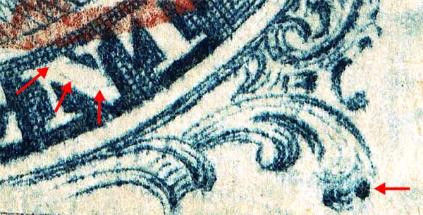
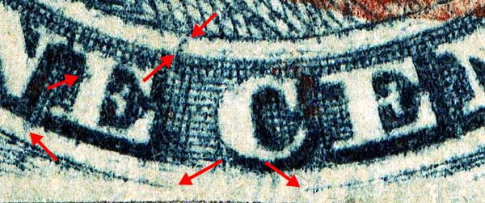
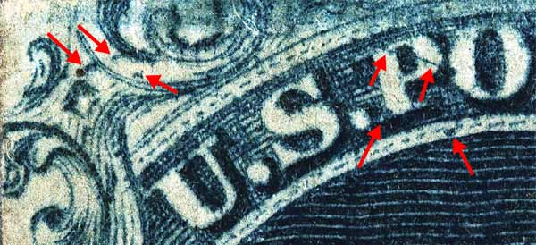

1¢ Franklin Issue of 1851-1857, PLATE 1 EARLY
Position 81L1E (Scott #8A) Type IIIa
Type IIIa, Relief B,
Only Issued Imperforate
INVERTED TRANSFER
This particular stamp is from a strip of 3. (See 82L1E and 83L1E). The bottom part of 81L1E shows the marvelous break in the bottom curved line, and classifies this position as the finest example of a Type IIIa on Plate 1E. When the plate was altered to the late state, this position was re-entered for the 3rd time and the bottom part of the design was thus restored.




DISCLAIMER and COPYRIGHT INFORMATION:
Thanks for visiting this site. I hope you learn something new as we are making new discoveries all the time. You, the visitor, have my permission to link to my pages and to share the INFORMATION with others. The images themselves fall under the fair use guidelines established by the United States Congress and Copyright law. Basically contact us before using. I also ask in return that you send me an e-mail if I have made a mistake, or have made some other technical blunder that in my rush to put these pages up would cause the visitor confusion. Please also visit my other website at www.slingshotvenus.com. and support the live music arts. While your there, be sure to purchase our music. There are not many philatelic rock stars around and we need all the help we can get. :-)
I can be reached at: nerdman@ix.netcom.com
Copyright © 2001-2006 Richard Doporto, Sonic Imagery Labs
UPDATE: 10/8/06